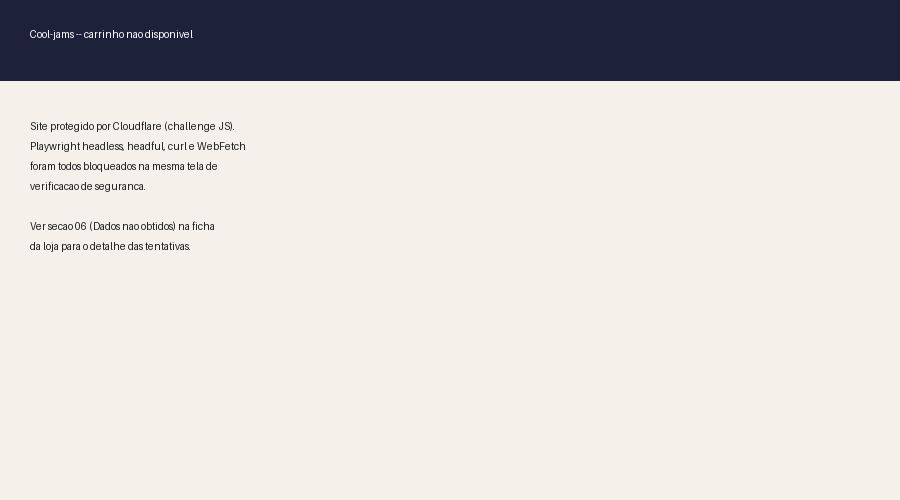
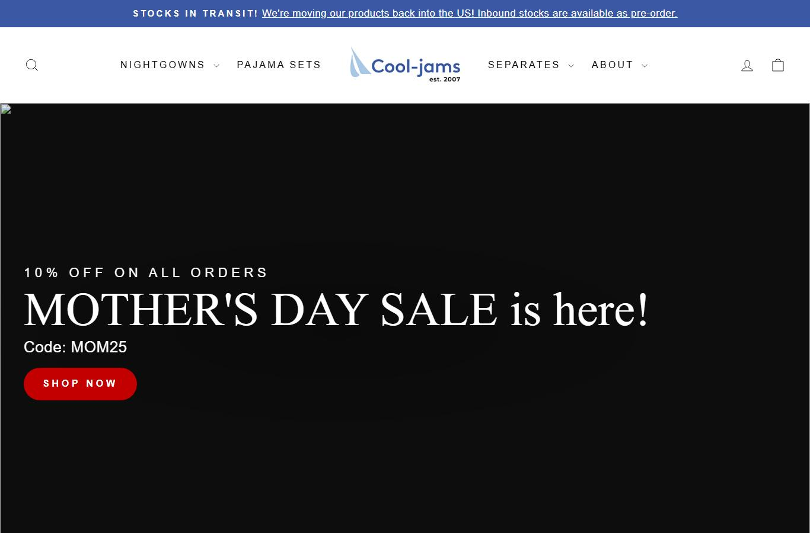

cool-jams.com · sleepwear cooling (resfriamento) para menopausa · USD
⚠️ O print ao lado mostra o "Cloudflare challenge" (tela de verificação de segurança que bloqueia robôs de pesquisa), não a foto real do produto — o site inteiro ficou protegido contra a coleta. Preço e nome vêm do catálogo público capturado antes do bloqueio, não de confirmação visual. Ver seção 06 (Dados não obtidos).
Preço por categoria da linha NightCool: tops $60 · calças/shorts $70 · camisolas (nightdresses) $80 · conjuntos $120
| Categoria (linha NightCool, 44 produtos) | Preço |
|---|---|
| Tops (camisetas) | $60 |
| Calças / shorts | $70 |
| Camisolas (nightdresses) | $80 |
| Conjuntos completos | $120 |
Lista item a item dos 44 produtos da linha não foi capturada (catálogo bloqueado antes da raspagem completa) — os 4 preços acima são as categorias confirmadas.
| Criativos únicos (amostra completa, 29 ativos) | ~4 (4 hooks, com variação de headline por anúncio) |
| Fator de duplicação | ~7,25x (mesmos 4 hooks rodando em várias variações) |
| Anúncios por dia | janela de criação não obtida com precisão (site bloqueado antes de capturar todas as datas) — declarado como lacuna |
Mix de formato e nível de sofisticação dos criativos não foi inspecionado visualmente, um a um (fica declarado como lacuna na seção 06) — a leitura acima é da copy e da estrutura de headline, não do formato visual.
| Headline |
|---|
| "Stop waking up hot" (pare de acordar suada) |
| "Finally. Sleep through the night." (finalmente, durma a noite toda) |
| "The 3am flip stops here." (o giro da 3 da manhã acaba aqui) |
| "Built for women who run hot." (feito pra mulheres que sentem mais calor) |


Este snapshot é de antes da linha NightCool existir (criada só a partir de fev/2026) e é um recorte de viewport, não a página inteira — serve só de referência visual de como a marca se apresentava, não do funil do ângulo cooling atual.
O que faz o ângulo vender, decodificado da copy dos 29 anúncios — aqui se estuda a linguagem e a ancoragem de preço, não a operação: essa loja é MARCA, não dropship replicável.
| Big idea / ângulo | Pare de acordar suada às 3 da manhã — um tecido projetado pra afastar o calor do corpo, não um pijama comum. |
| Mecanismo único | Tecido proprietário "Kottinu" (engineered moisture-wicking fabric, tecido projetado que afasta umidade da pele). |
| Formato de hook | "Stop waking up hot" / "Finally. Sleep through the night." / "The 3am flip stops here." / "Built for women who run hot." — variações de resultado, não de sintoma. |
| Estrutura do presell | Estatística de abertura ("80% of women experience night sweats") + reframe de objeção de qualidade ("deserve better than cotton") direto no criativo. |
| Objeção principal | "Já tentei de tudo e nada funciona" / "é só mais um pijama de algodão." Respondida atacando o algodão comum como o vilão, não o corpo da cliente. |
O que estudar de cada página, com o link pra abrir (o "Cloudflare challenge" pode passar num navegador comum, mesmo tendo bloqueado a coleta automatizada).
| Home — o que estudar | Como uma marca de 19 anos lança um ângulo novo (NightCool) sem reconstruir o site do zero: linha nova plugada dentro da estrutura antiga. 🏬 abrir home ↗ |
| PDP — o que estudar | Escada de preço por categoria ($60 tops até $120 conjuntos), frete grátis a partir de $120 e devolução de 30 dias com etiqueta. 🛍️ abrir loja ↗ |
Widget detectado: Stamped.io. A contagem ao vivo não saiu por raspagem (site bloqueado pela Cloudflare).
Transparência sobre os limites desta ficha. Cada linha mostra o que faltou, por quê, e o que foi tentado.
| Dado | Motivo | Método tentado |
|---|---|---|
| Home e PDP ao vivo | site inteiro protegido por Cloudflare | Playwright headless, Playwright headful, curl e WebFetch — todos retornaram a tela de verificação de segurança (challenge), não o HTML real. Usado snapshot Wayback de 2025 como referência visual alternativa (pré-NightCool). |
| Tráfego real (SimilarWeb) | não coletado nesta pesquisa | Loja classificada MARCA/OBSERVAR — fora do foco de triangulação de faturamento desta rodada, que priorizou a única loja replicável desta pesquisa (Lusomé). |
| Faturamento mensal estimado | depende de tráfego real, não coletado | Sem base de visitas medida, uma estimativa aqui seria só achismo — optou-se por não triangular. |
| Contagem de reviews ao vivo | Stamped.io carrega via chamada autenticada + site bloqueado pela Cloudflare | JSON-LD e inspeção de widget; usado proxy do Wayback 2025 (261 e 217 avaliações, nota 4.8) em produtos que não são da linha NightCool. |
| Catálogo completo da linha NightCool | Cloudflare bloqueou a raspagem antes de listar os 44 produtos um a um | Capturados só os 4 preços por categoria (tops/calças/camisolas/conjuntos) antes do bloqueio. |
| Mix de formato/sofisticação dos criativos | exige inspeção visual de cada um dos 29 anúncios | Não realizado nesta rodada; a leitura de anatomia do vencedor ficou restrita à copy e headline. |
| Pixel ID da Meta | não encontrado | Regex no HTML não aplicável — site bloqueado pela Cloudflare. |
Cool-jams é uma marca de sleepwear de 19 anos, adquirida por um grupo investidor em 2023, com fundadora reconhecida publicamente — não é uma operação de dropshipping pra replicar. A linha NightCool (44 produtos, todos lançados entre fev e jul/2026) roda com 100% de sobrevivência nos 29 anúncios ativos, sinal de um ângulo vencedor ("Stop waking up hot", pare de acordar suada) que vale estudar como copy e como escada de preço ($60 a $120), não como operação a montar do zero.